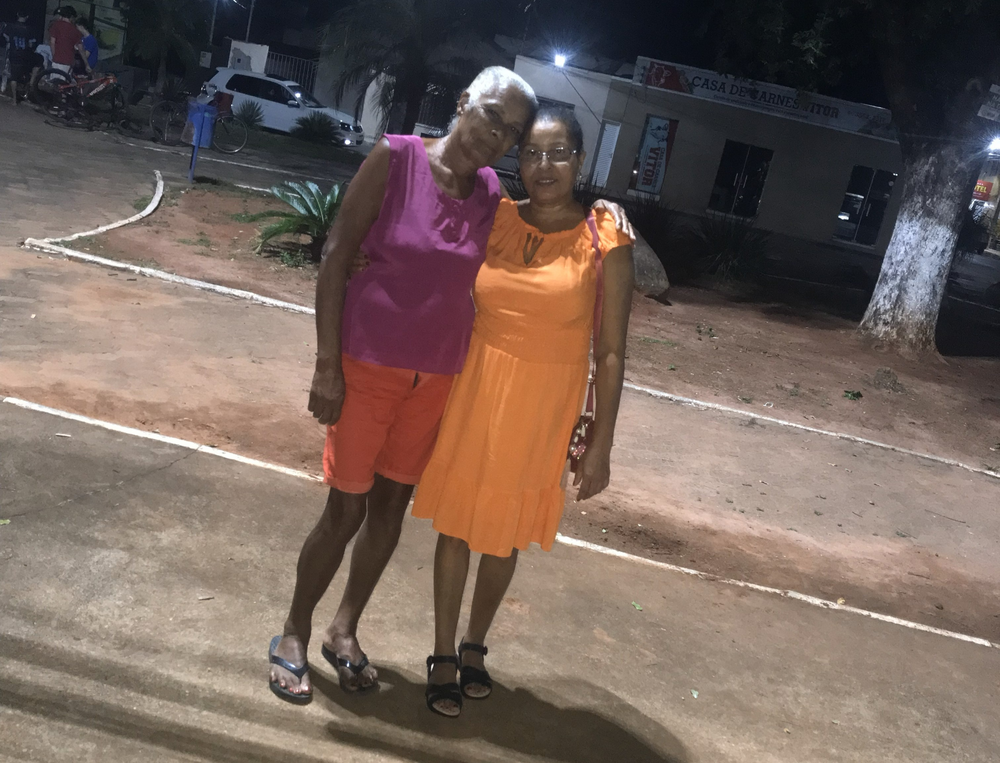
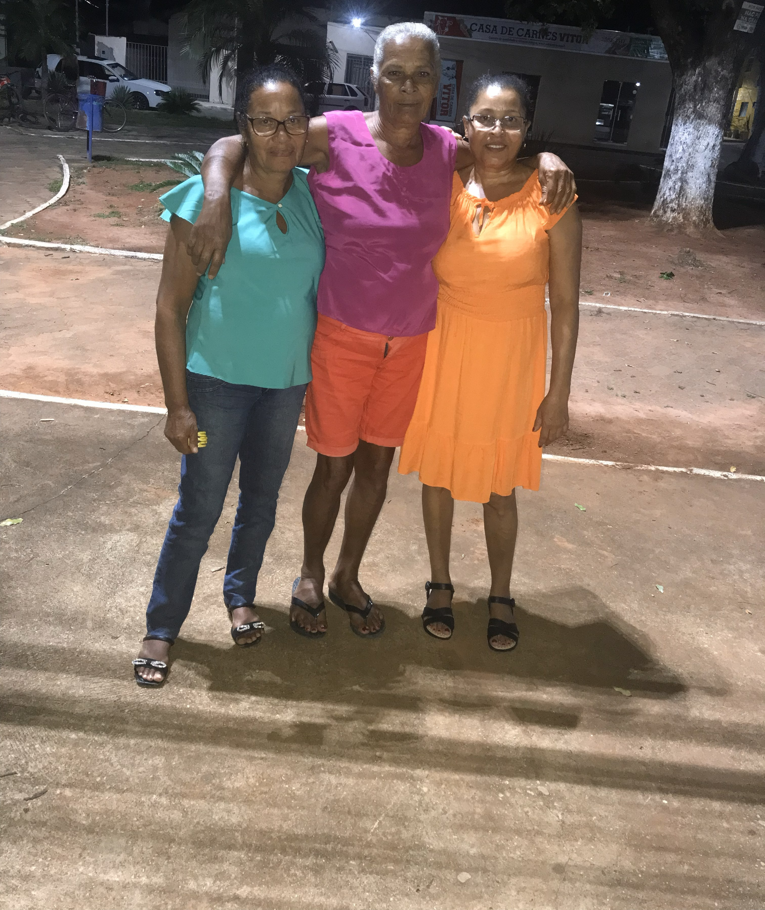
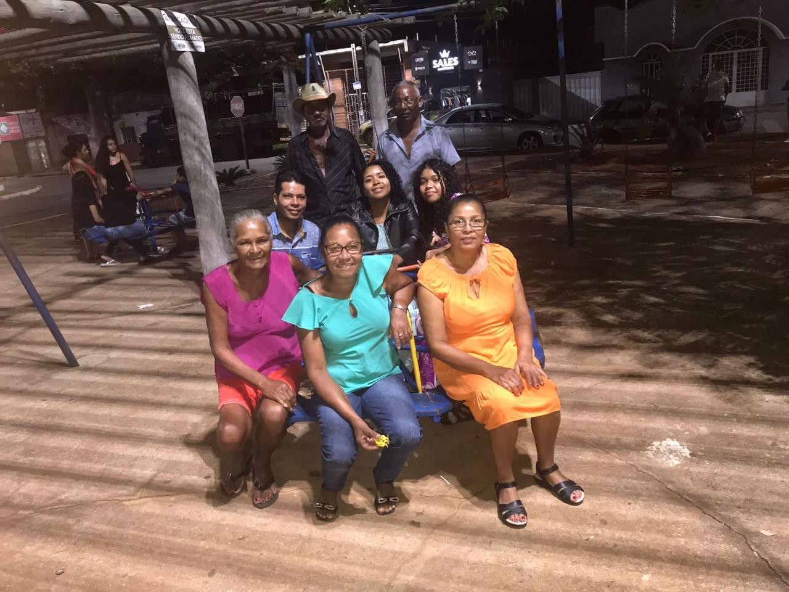
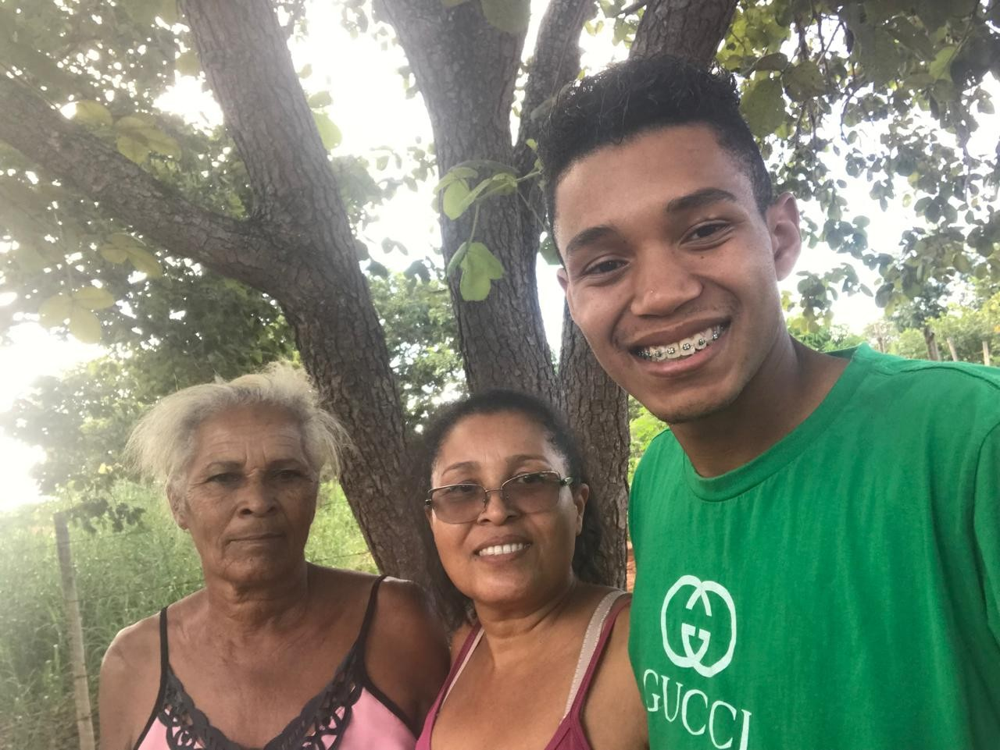
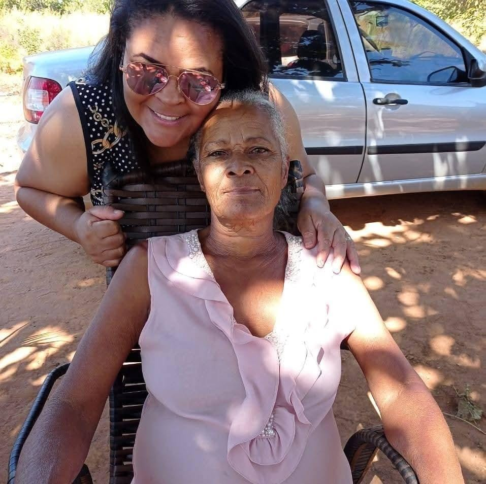
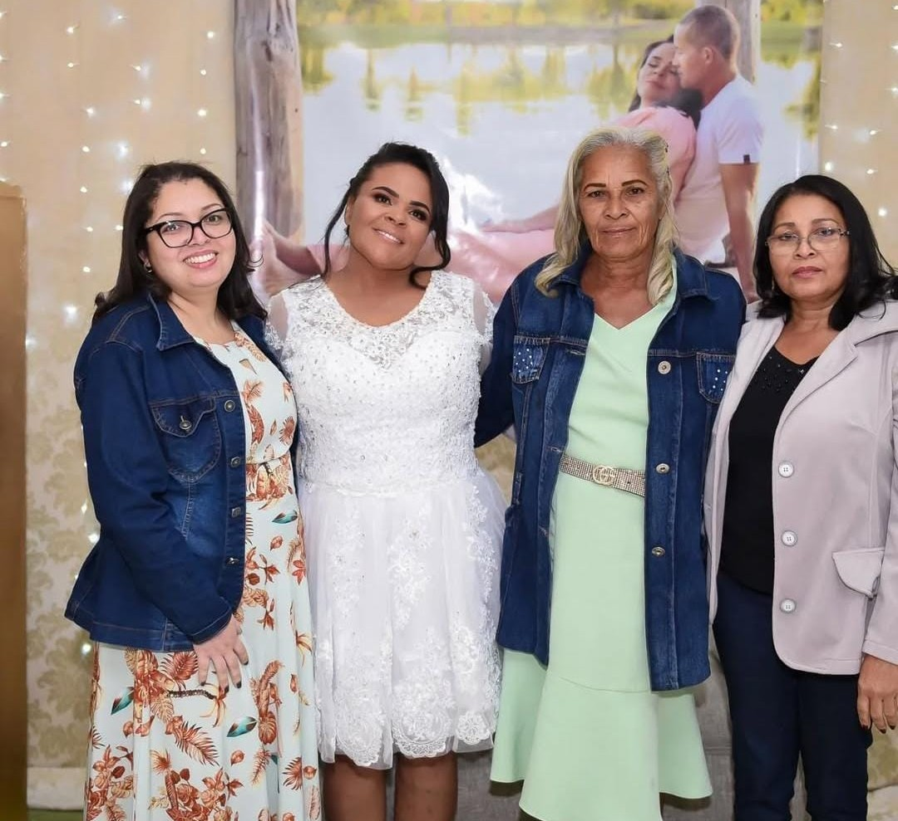
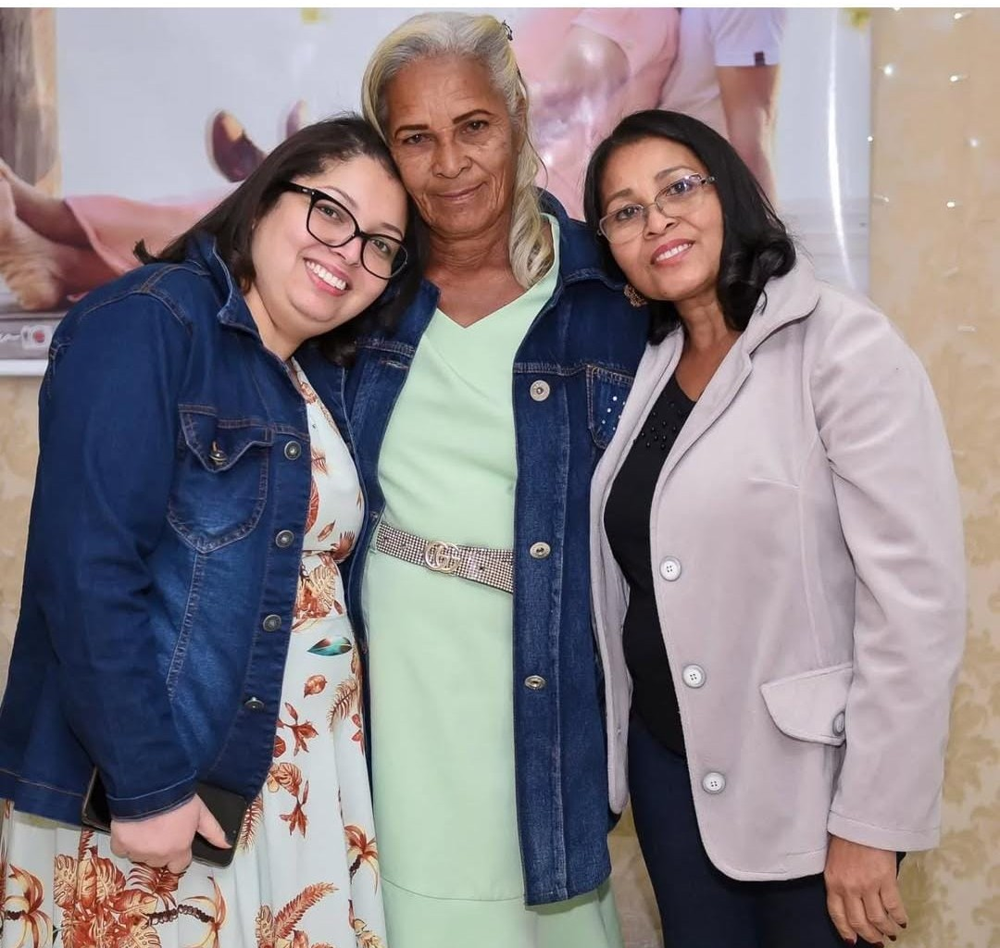
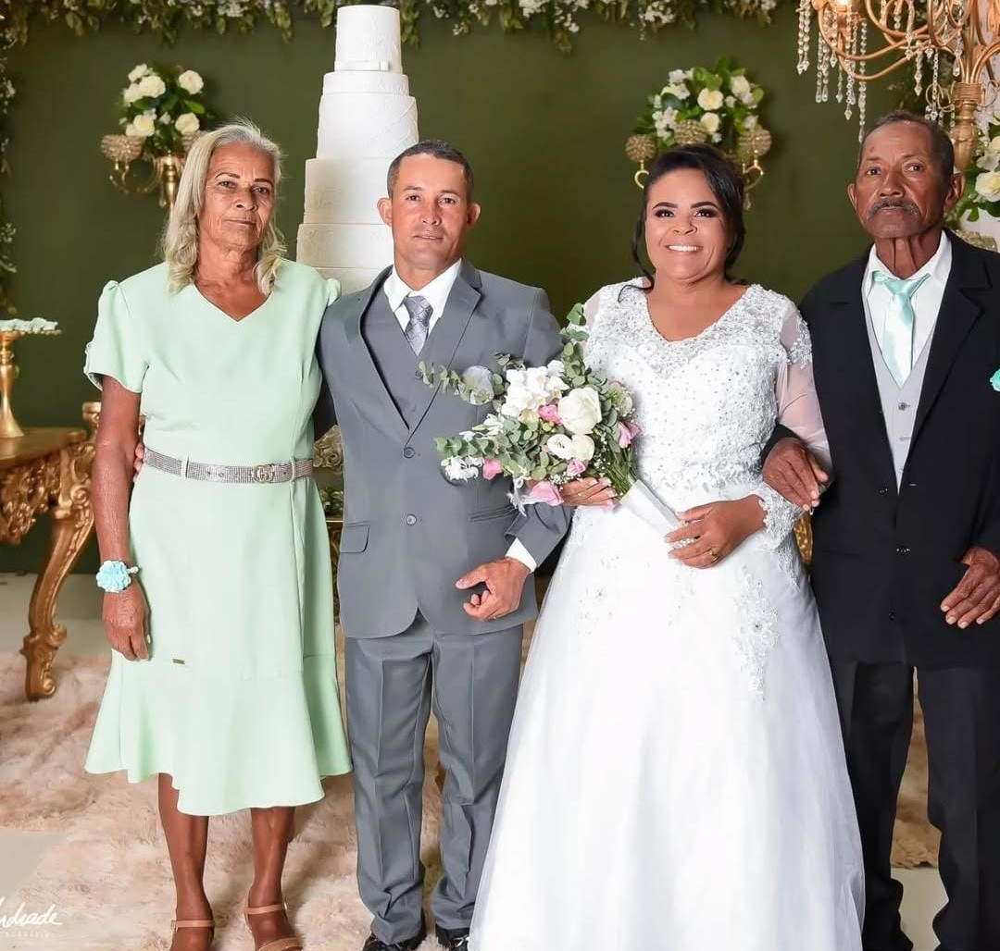

Quem Sou Eu
Germana sempre foi o porto seguro. Sua jornada é definida pelo cuidado incansável e
pela capacidade de transformar pequenos gestos em grandes lições de vida. No papel de avó e bisavó,
ela descobriu uma nova forma de florescer. Para os seus netos e bisnetos, Germana é o sinônimo de
doçura, de histórias compartilhadas e do colo que nunca falta.
Além dos laços de sangue, Germana é uma mulher profundamente querida em sua comunidade e círculos
de amigos. Sua facilidade em cativar as pessoas vem de sua autenticidade e da empatia que transborda
em suas conversas.
"A vida de Germana é um mosaico feito de carinho, resiliência e, acima de tudo, uma capacidade infinita de
amar. Ela não apenas viveu os dias; ela os preencheu com significado para todos que tiveram
a sorte de caminhar ao seu lado."
Galeria de Memórias



.jpg)





.jpg)

.jpg)

.jpg)
.jpg)
.jpg)


.jpg)
.jpg)
.jpg)
.jpg)
.jpg)
.jpg)
.jpg)
.jpg)
.jpg)
.jpg)

Momentos em Vídeo
O Que Dizem Sobre Mim
"Você foi mais que uma irmã, foi minha confidente e melhor amiga. Agradeço a Deus por cada momento vivido. Sua alegria de viver e seu coração generoso nunca serão esquecidos. Te amo em todos os planos."
"Querida irmã, sua partida deixou um vazio indescritível, mas sua luz continua a brilhando em nossas memórias. A saudade é eterna, mas o amor que compartilhamos viverá para sempre no meu coração. Descanse em paz, minha eterna companheira."

"Mãe, sua partida deixou um vazio profundo, mas o amor e as lições que você me deixou são uma luz constante que ilumina minha vida. Sua presença vive em cada detalhe, no cheiro do café e nos ensinamentos que carrego. Você nunca será esquecida."
"Onde eu estiver, estarei orando por você. Agradeço pela sua presença que só alegrias me trazia. A distância física não apaga o amor que sinto"

"Obrigada por ser minha confidente, minha conselheira e melhor amiga. Você se mantém presente através do amor que deixou no coração da nossa família."
"Minha querida tia, sua partida deixou uma saudade profunda, mas também um legado inestimável de amor e bondade. Agradeço por ter sido uma tia tão especial, por cada conselho e por todo o carinho que moldou quem sou. Sua luz continuará aquecendo nossos corações."
"Nossa família perde uma parte de sua luz, mas o laço que construímos com você, querida cunhada, jamais será apagado. Sua alegria e amor incondicional viverão para sempre em nossos corações. Descanse em paz, sabendo que deixou um legado de amor."
"Durante todo o período, mantivemos uma união pública, contínua e duradoura, com o objetivo de constituição de família, reconhecida por amigos e familiares."